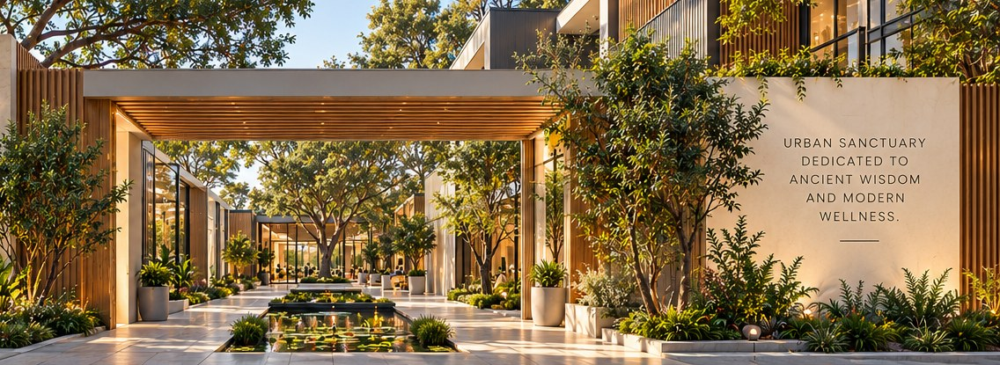
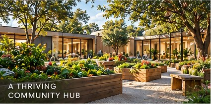
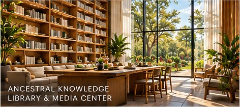
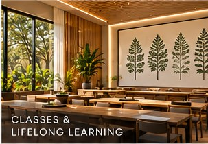
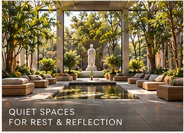
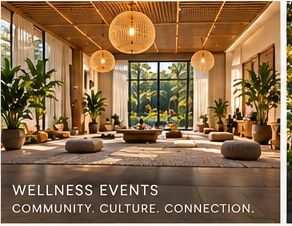

Ancestral knowledge
Honor distinct cultural traditions and share knowledge with context, care and stewardship.
A House of Life for today
Shamba Sana brings ancient wisdom and modern wellness into a shared vision for places and practices that nourish body, mind, spirit and community.

THE FUTURE SHAMBA SANA SANCTUARYA future vision in development, inspired by nature and community.
The founding idea
LEARN REST GROW CONNECT
Inspired by the ancient Egyptian concept of Per Ankh—the House of Life—Shamba Sana imagines a place where learning, care, nature and community belong together.
Our long-term vision is a welcoming urban sanctuary: a place to learn, connect with practitioners, grow food, preserve knowledge and find restoration.
That vision is taking shape through two pathways today: an active learning community and the development of practitioner-guided Integrative Care.
A whole-person perspective
We see wellbeing as a relationship among body, mind, spirit, daily habits and the environments we share.
Honor distinct cultural traditions and share knowledge with context, care and stewardship.
Consider the many parts of a person’s life and how they shape everyday wellbeing.
Engage with contemporary research thoughtfully and alongside qualified practitioners.
Build understanding and practical habits that support informed participation in wellbeing.
One philosophy. Two pathways.
Learning can deepen self-understanding. Practitioner-guided care can help people apply what they learn with support.
01 LEARN
Explore ancestral knowledge, integrative wellness and practical approaches to living well through guided learning and community.
Active learning community
A dedicated Institute destination for program information, enrollment guidance and student access.
Explore the Institute02 PRACTICE
A developing practitioner-guided pathway bringing personalized wellness support into reach beyond a physical sanctuary.
Pilot in development
Explore Integrative CareA vision for the spaces we share
A garden that nourishes. A library that invites discovery. A quiet space to pause. The sanctuary vision brings these experiences together in a contemporary, light-filled setting.





These are concept renderings from the Shamba Sana brand book; they illustrate a future vision and do not depict an operating campus.
Founder & founding vision
Shamba Sana grows from Dumisani’s experience in acupuncture, Chinese herbal medicine, nutrition and education. His work through LifeRx brought prevention, plant-based wellbeing and patient education together.
That experience informs a vision for Shamba Sana: learning, practitioner services, botanical knowledge and care connected in a community setting.
Begin with knowledge